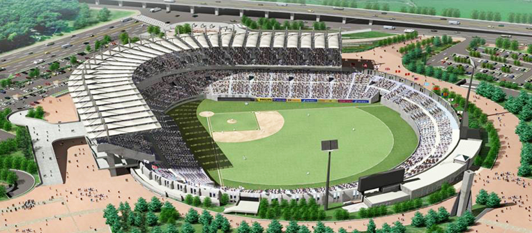

21세기 서해안 시대의 관문 도시인 인천의 웅비와 기상을 상징하는 인천SSG랜더스필드(야구장)은
SSG랜더스의 홈구장으로서의최고의 시설로 한국 야구의 질적 수준을 향상시켰습니다.
관람객에게 보는 야구를 넘어 즐기는 야구, 누리는 야구의 진수를 선사하는 구장으로 인천SSG랜더스필드를 찾는
관객들에게 색다른 즐거움과 감동을 선사할 것입니다.
경기장 개요
- 수용규모 : 총 23,000석
- 층 수 : 지하 3층, 지상 5층
- 연면적 : 41,901㎡ (12,740평)
- 형태 : 야구경기장 (센터라인 120m, 좌우파울라인 95m)